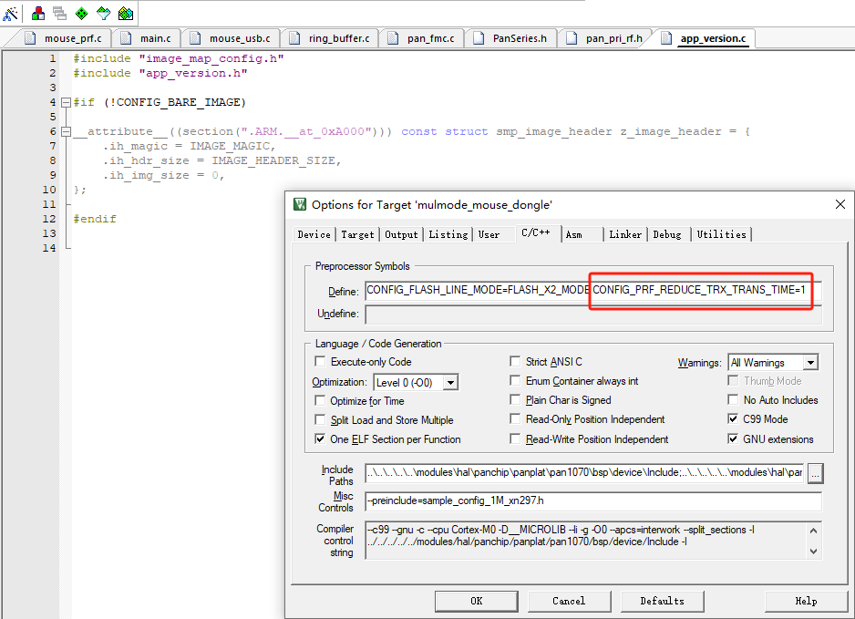
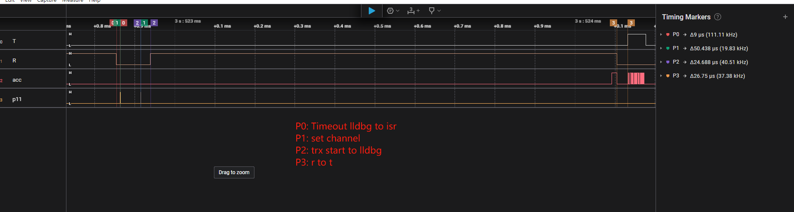

PRF Dongle¶
重要
此例程仅存在于特殊版本的SDK中，如有需要请联系Panchip。
1 功能概述¶
此sample为pan107/pan101上演示Dongle配合108鼠标端控制功能
2 环境要求¶
board:
pan107QFN32核心板/pan101MSOP10核心板 + evb底板uart0: 设置P16，P17作为默认的LOG输出端口，波特率921600
3 编译和烧录¶
例程位置：<home>\nimble\samples\solutions_hid\prf_dongle\keil_107x
使用keil进行打开项目进行编译烧录，需要先移植确认flm文件（modules\hal\panchip\panplat\pan1070_hal_release\mcu_misc）拷贝至keil安装目录
4 演示说明¶
keil全擦芯片后，编译烧录boot程序
pan10xx_mcu_boot\keil,之后烧录prf_dongle程序，此时进入对码状态，dongle端在2412频点{ 0x7b, 0x41, 0x29, 0x71 }地址（PIPE0）进行扫描，并根据本地mac地址的后四位计算出私有的8个跳频地址108鼠标进入强制配对，在2412频点
{ 0x7b, 0x41, 0x29, 0x71 }发送鼠标端的mac地址107dongle收到对码地址频点的鼠标端mac地址后，回复本地mac地址，并且把鼠标端mac地址后四位设置为PIPE1地址，如果在PIPE1地址上任意私有频点收取到数据，结束对码状态，如果没有收到私有地址频点的通信包，timeout中仍有机会切换到配对频点（鼠标端收到对码地址频点的dongle mac地址后，计算出私有的8个跳频地址，切换到鼠标mac地址后四位作为地址，跳频发送数据）
对码后可以进行控制
5 开发说明¶
5.1 Flash配置及接口说明¶
PAN107（512K 32pin）芯片作为调试芯片，最终PAN101（仅4个IO：P00 P01作为烧录脚，可以复用；P13 P14作为USB通信线，无Reset脚，reset需要重新上电；16K RAM 256K flash）作为实际使用芯片
为确保PAN107编译的程序可以直切切换到PAN101芯片中
BOOT默认划分40k flash，APP默认划分212k flash，可在pan10xx_samples\solutions_hid\prf_dongle\include\image_map_config.h中查看
CONFIG_BARE_IMAGE=0:程序从boot启动后跳转到APP编译地址0x3F000，需要先进行boot烧录
CONFIG_BARE_IMAGE=1:设置1可以将APP编译到0x0地址，rebuild烧录后，芯片不含boot区域
需要注意101由于reset状态不易控制，先下载过CONFIG_BARE_IMAGE=1的程序如果后续修改为CONFIG_BARE_IMAGE=0需要重新上电确保不掉电配置稳定
其他配置可以参考，不建议改动
/*
* Copyright (c) 2022 Shanghai Panchip Microelectronics Co.,Ltd.
*
* SPDX-License-Identifier: Apache-2.0
*/
#ifndef IMAGE_MAP_CONFIG__H
#define IMAGE_MAP_CONFIG__H
#define CONFIG_BARE_IMAGE 0
#define CONFIG_OTA_IN_BOOTLOADER 0
#define SIZE_256K 0x3F000
#define SIZE_512K 0x7F000
#define SIZE_1M 0xFF000
#define SIZE_BOOTLOADER 0xA000 // 40k
#define SIZE_FIXED_APP_IMAGE 0x35000 // 212k
#define SIZE_FIXED_USER_FLASH 0x7000
/* bare program which means it can work without bootloader
* note image start at 0 address,and user can modify CONFIG_USER_FLASH_EXTENDED_SIZE size
*/
#if (CONFIG_BARE_IMAGE)
#define SIZE_IMAGE_HEADER 0
#define CONFIG_USER_FLASH_EXTENDED_SIZE (0) /* user can change the value */
#define APP_IMAGE_START 0x00000000
#define APP_IMAGE_SIZE (SIZE_256K - SIZE_FIXED_USER_FLASH - CONFIG_USER_FLASH_EXTENDED_SIZE)
/* ota in bootloader and there are have no backup area. so it can expand image size user can use
* note it does not support ble ota
*/
#elif (CONFIG_OTA_IN_BOOTLOADER)
#define SIZE_IMAGE_HEADER 512
#define CONFIG_IMAGE_EXTENDED_SIZE (120 * 1024) /* user can change the value */
#define CONFIG_USER_FLASH_EXTENDED_SIZE (100 * 1024) /* user can change the value */
#define APP_IMAGE_START 0x0000A000
#define APP_IMAGE_SIZE (SIZE_FIXED_APP_IMAGE + CONFIG_IMAGE_EXTENDED_SIZE)
#if (APP_IMAGE_SIZE + CONFIG_USER_FLASH_EXTENDED_SIZE + SIZE_BOOTLOADER > SIZE_256K) /* todo author:chao */
#error config ota in bootloader flash map over 508K
#endif
/* ota in bootloader and there are have a backup area.
* note it is used to adapt to condition that use want to ota in ble ways
*/
#else
#define SIZE_IMAGE_HEADER 512
#define CONFIG_USER_FLASH_EXTENDED_SIZE (0) /* user can change the value */
#define APP_IMAGE_START 0x0000A000
#define APP_IMAGE_SIZE (SIZE_FIXED_APP_IMAGE - CONFIG_USER_FLASH_EXTENDED_SIZE)
#endif
#endif
pan10xx_samples\solutions_hid\prf_dongle\Keil_107x\project.sct 中限制了RAM使用大小16K
#! armcc -E
; *************************************************************
; *** Scatter-Loading Description File generated by uVision ***
; *************************************************************
#include "..\include\image_map_config.h"
LR_IROM1 APP_IMAGE_START APP_IMAGE_SIZE { ; load region size_region
#if SIZE_IMAGE_HEADER
ER_IROM0 APP_IMAGE_START SIZE_IMAGE_HEADER { ; load address = execution address
*app_version.o
}
#endif
ER_IROM1 (APP_IMAGE_START + SIZE_IMAGE_HEADER) APP_IMAGE_SIZE { ; load address = execution address
*.o (RESET, +First)
*(InRoot$$Sections)
.ANY (+RO)
.ANY (+XO)
}
RW_IRAM1 0x20000000 0x00004000 { ; RW data
.ANY (+RW +ZI)
*.o (.ramfunc)
}
}
以上，确保107芯片上编译验证后可以进行直接切换下载到101芯片中
BOOT跳转注意点：
可以使用 boot工程中BOOT_FROM_USB来控制实现boot升级流程，也可以不使用，最终跳转接口jump_to_app
Flash存读接口：
参考prf dongle代码中，对 配对的mac地址的操作，参考代码在200k位置进行配对信息存储
FMC_ReadStream(FLCTL, 0x32000, CMD_DREAD, read_addr0, 6);
FMC_ReadStream(FLCTL, 0x32006, CMD_DREAD, read_addr1, 6);
FMC_WriteStream(FLCTL, 0x32000, &prf_state.pair_private_addr[0][0], 6);
5.2 PRF说明¶
5.2.1 初始化¶
pan_prf_config_t rx_config =
{
.work_mode = (prf_mode_t)PRF_WORK_MODE, // PRF_MODE_NORMAL,PRF_MODE_ENHANCE
.chip_mode = (prf_chip_mode_sel_t)PRF_CHIP_MODE, // PRF_CHIP_MODE_SEL_NRF,//PRF_CHIP_MODE_SEL_XN297,
.trx_mode = (prf_trx_mode_t)PRF_TRX_SELECT,
.phy = (prf_phy_t)PRF_PHY_SELECT, // PRF_PHY_250K,//PRF_PHY_1M,
.crc = (prf_crc_sel_t)PRF_CRC,
.src = (prf_scramble_sel_t)PRF_SCR,
.mode_conf = (prf_mode_conf_sel_t)PRF_MODE_CONFIG,
.rx_timeout = 10000, // us
.rf_channel = 2412,
.tx_no_ack = DISABLE,
.trf_type = (prf_trf_t)PRF_TRANS_TYPE,
.rx_length = 30,
.sync_length = 4,
.crc_include_sync = ENABLE,
.src_include_sync = ENABLE,
.sync = { 0x7b, 0x41, 0x29, 0x71 },
.pid_manual_flag = ENABLE,
.tx_power = 9,
.pipe = PRF_PIPE0,
};
void mouse_prf_init(void)
{
panchip_prf_init(&rx_config);
/* init not init channel, must init channel after init */
panchip_prf_set_chn(rx_config.rf_channel);
/* adr match bit match whole absolutely */
PRI_RF_SetAddrMatchBit(PRI_RF, 0);
/* disable pid err isr */
panchip_prf_pid_cfg(&rx_config, 0);
/* enable len err isr */
panchip_prf_rx_length_irq_cfg(ENABLE);
#if PRF_DBG_PIN
PRI_RF_WRITE_REG_VALUE(PRI_RF, TEST_MUX02, TST_MUX_SELECT_11, 0x14); // tx on
SYS->P1_MFP |= SYS_MFP_P10_LL_DBG_11;
PRI_RF_WRITE_REG_VALUE(PRI_RF, TEST_MUX02, TST_MUX_SELECT_09, 0x15); // rx on
SYS->P0_MFP |= SYS_MFP_P04_LL_DBG_9;
PRI_RF_WRITE_REG_VALUE(PRI_RF, TEST_MUX02, TST_MUX_SELECT_10, 0x17); // data
SYS->P0_MFP |= SYS_MFP_P07_LL_DBG_10;
PRI_RF_WRITE_REG_VALUE(PRI_RF, TEST_MUX03, TST_MUX_SELECT_12, 0x13); // acc match
SYS->P0_MFP |= SYS_MFP_P05_LL_DBG_12;
#endif
mouse_prf_pair_init();
panchip_prf_trx_start();
}
全局变量
rx_config，部分来源于config文件，部分来源于直接配置，定义好后，panchip_prf_init(&rx_config);会进行除了频点之外的初始化，一定要在之后进行频点设置panchip_prf_set_chn(rx_config.rf_channel);init后，设置地址全匹配，关闭pid err中断，开启len err中断，rf状态可控，增强型模式下，一定会进行完成
r->t/timeout/crc/len err状态，中断内控制好下一次trx start之前进行flash操作、状态控制，不会引起rf死机状态PRF_DBG_PIN控制lldbg信号，可以抓取rf工作中的时序，但需要注意，开启debug信号时会一定程度影响rf，crc率会变高，关闭后正常mouse_prf_pair_init();中获取dongle mac地址，计算出配对频点（通过dongle mac后四字节），并且设置可能存储过的配对地址作为rf 收取地址/* set PRI_RF_MODE_SEL_RX addr will set the rx addr & pipe */ /* set PRI_RF_MODE_SEL_TX addr will set the single tx addr, no set tx will use init tx addr */ /* set PRI_RF_MODE_SEL_TRX addr will set the trx addr both, no set tx will use init tx addr */ panchip_prf_set_addr(&read_addr0[2], 4, PRF_PIPE1, PRI_RF_MODE_SEL_RX); panchip_prf_set_addr(&read_addr1[2], 4, PRF_PIPE2, PRI_RF_MODE_SEL_RX);
设置PRI_RF_MODE_SEL_RX地址仅设置接收PIPE，不会设置发送地址
rx isr中需要设置payload并且设置回复时的tx地址，设置发送地址参考
__ramfunc void app_prf_set_tx_addr(uint8_t *addr) { #if SET_TX_ADDR_DIRECT /* 1.25us */ uint32_t tx_addr; tx_addr = (addr[0]) | (addr[1] << 8) | (addr[2] << 16) | (addr[3] << 24); PRI_RF_WRITE_REG_VALUE(PRI_RF, R05_TX_ADDR_L, L32B, tx_addr); #else /* 6us no used third param */ panchip_prf_set_addr(addr, 4, 0, PRI_RF_MODE_SEL_TX); #endif }
最后进行panchip_prf_trx_start();开启tx；需要注意，工程options C++ 中默认开启了最快时序
CONFIG_PRF_REDUCE_TRX_TRANS_TIME=1
5.2.2 时间说明¶
说明比较重要的时间量取参数

timeout debug信号结束到进入timeout中断：9us
设置频点时间：50us
trx start调用到debug信号拉取到发送出数据：24us
DG端 rx自动转tx发送出时间：26us
trx start执行占用时间
rx isr中需要设置payload并且设置回复时的tx地址，设置地址时，可以快速设置4字节地址或者调用底层封装接口设置，分别占用1us或者6us，影响还好，就算当前次不能及时设置好地址，依然会在下次配对地址收到数据后在对应地址回复出
/* set addr will set the tx addr, if want to ack data from dynamic rx pipe ,rx isr must set tx addr */ __ramfunc void app_prf_set_tx_addr(uint8_t *addr) { #if SET_TX_ADDR_DIRECT /* 1.25us */ uint32_t tx_addr; tx_addr = (addr[0]) | (addr[1] << 8) | (addr[2] << 16) | (addr[3] << 24); PRI_RF_WRITE_REG_VALUE(PRI_RF, R05_TX_ADDR_L, L32B, tx_addr); #else /* 6us no used third param */ panchip_prf_set_addr(addr, 4, 0, PRI_RF_MODE_SEL_TX); #endif }
5.2.3 多pipe使用说明¶
107相对于108，增加feature 多pipe地址收取的功能，灵活使用可以实现配对地址和多通道地址同时可以收取回复数据，基于此feature可以扩展多个主机设备配对同一dongle，目前主机端最快速度在250us内可以完成发收，所以多设备自行处理的条件下，通过重传可以做到至少2个设备配对同一dongle后，可以达到1000hz上报率
演示说明：
准备2个108 8k鼠标，鼠标1下载默认程序，鼠标2下载 PAIR_COMBO_DG_DEV2=1的第二设备程序
编译下载PAIR_ONLY_ONE=0的107 dongle程序
鼠标1进入配对状态，复位107，鼠标1配对成功，鼠标1不移动情况下鼠标2进入配对或者上电状态，鼠标2配对成功
鼠标1可以达到1000hz上报率，鼠标2默认配对后125hz上报率
对码说明参考演示说明部分的第四点，补充说明鼠标1和鼠标2的区别在于，配对过程数据字段，回复的数据除了各自mac地址，还有额外的数据字段区分对应配对到哪一个pipe，107 rf中确认私有mac搜索到数据通信后不再添加其他地址，重新上电会重新进入可添加pipe地址状态
pkt_pair.magic = PAIR_MAGIC;
#if PAIR_COMBO_DG_DEV2
pkt_pair.type = 0x20;
#else
pkt_pair.type = PAIR_MOUSE_8K_FLAG;
#endif
memcpy(pkt_pair.mac, pair_ctrl.pair_own_addr, 6);
memcpy(tx_payload.data, &pkt_pair, 9);
5.3 USB说明¶
USB init软件过程基本与108一致，其他部分使用也一致
硬件需要注意，101/107系列早期存在USB有问题版本，接入hub并且在hub上的第一个口通常能识别成功但也不稳定，直插线的方式在大部分电脑上都不能成功识别，一定要选用MPC版本之后USB修复后的芯片
void usb_init(void)
{
uint32_t reg_tmp;
ANA->ANA_MISC_3V |= ((0x1 << 27) | (0x1 << 28));
ANA->ANA_MISC_3V |= ((0X1 << 26));
/*usb debounce time*/
SYS->CTRL1 = ((SYS->CTRL1 & ~0xff) | 100);
reg_tmp = READ_REG(USB->INT_USBE);
reg_tmp |= 0x10;
WRITE_REG(USB->INT_USBE, reg_tmp);
printf("usb_init\n");
NVIC_EnableIRQ(USB_IRQn);
}